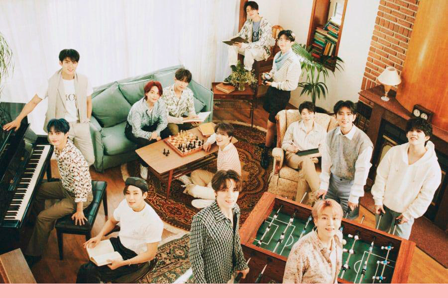
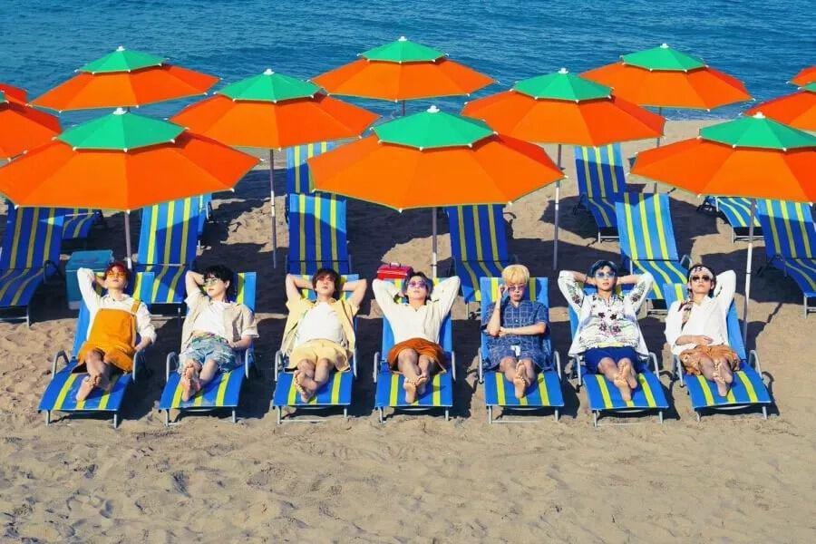
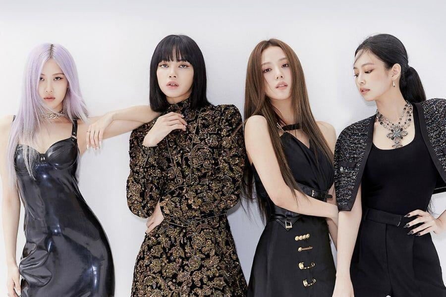
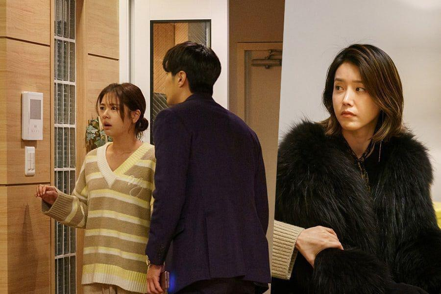
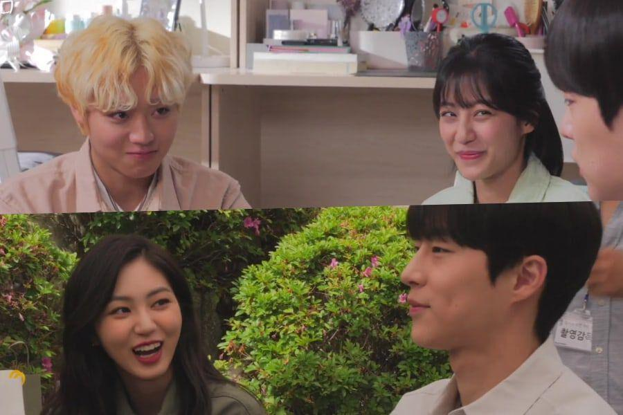
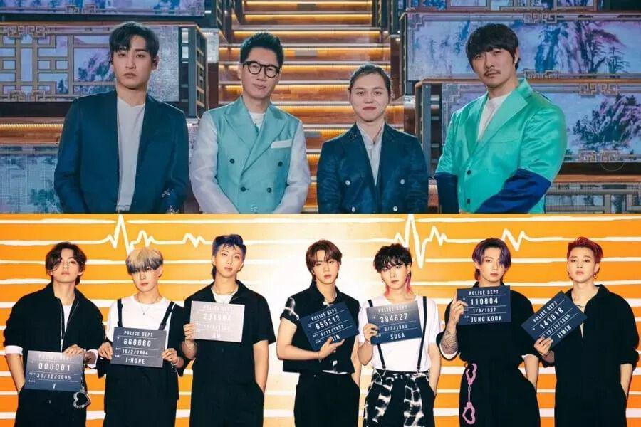
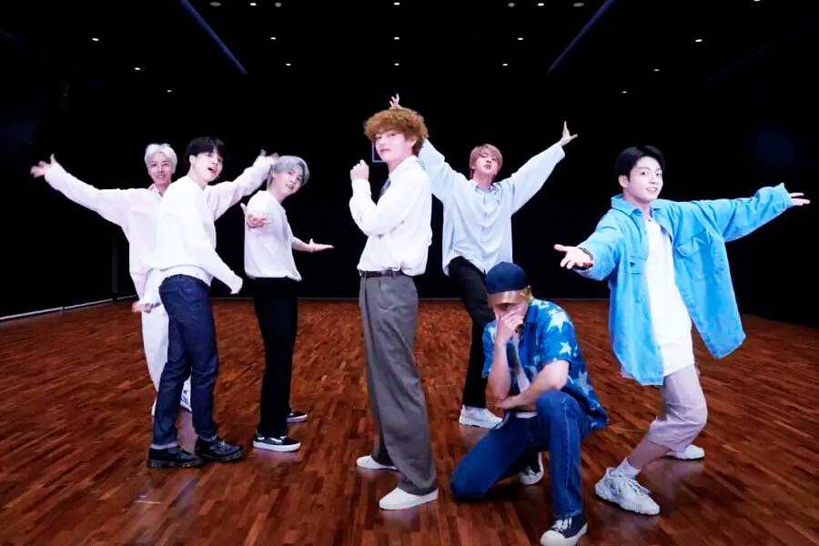
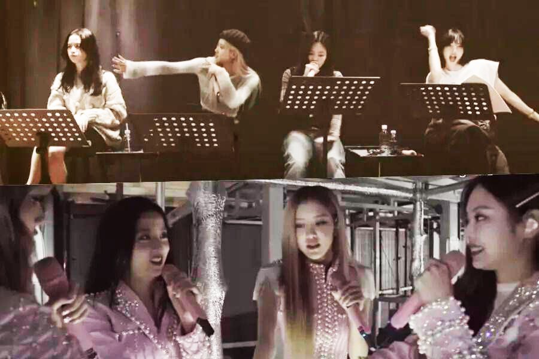
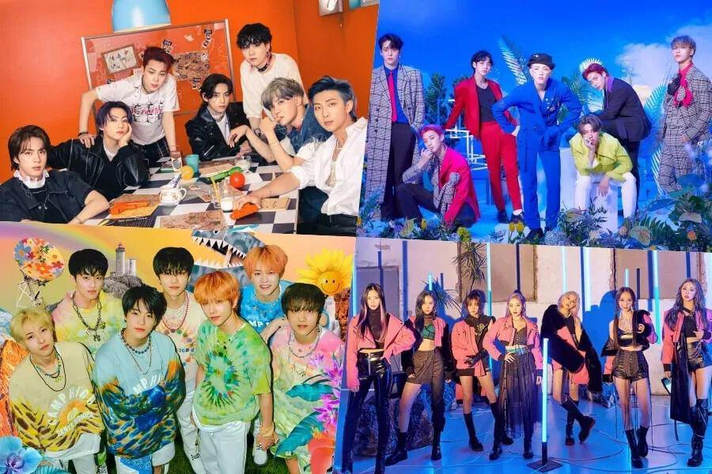
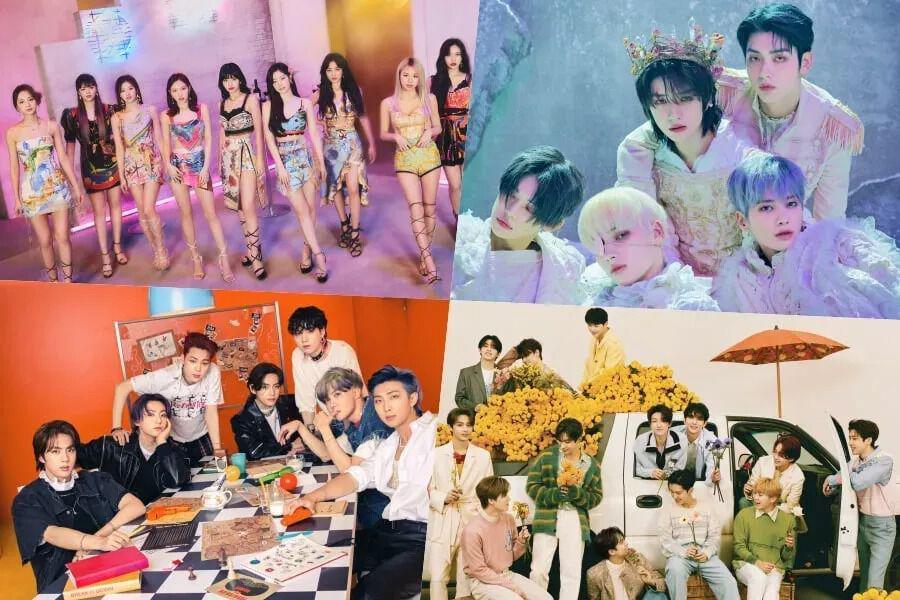

INICIO
TV/CINE
MÚSICA
CULTURA
VIDEO
CONTACTO
COMUNIDAD
Bienvenido a Chingu
HYBE comparte actualización sobre acciones legales contra comentaristas maliciosos y difamación de artistas
Dasom se separa de Starship Entertainment después de 11 años
Wonho revela su light stick oficial

SEVENTEEN pospone promociones de comeback luego de que parte de su staff diera positivo para COVID-19
Jeonghan de SEVENTEEN abre su propio Instagram + S.Coups le suplica en broma que le siga también
TENDENCIA


V de BTS, Park Seo Joon, Park Hyung Sik, Choi Woo Shik y más harán cameos en el nuevo MV de Peakboy
BTS actuará en el evento especial mundial de 24 horas “Global Citizen Live”
Yeo Jin Goo se encuentra en conversaciones junto a Moon Ga Young para protagonizar un nuevo drama de tvN
BLACKPINK anuncia el lanzamiento de su comunidad de fans en Weverse
ÚLTIMAS NOTICIAS
Kim So Yeon y Choi Ye Bin experimentan una situación inesperada en “The Penthouse 3”
Park Sung Hoon se da de baja del nuevo drama de Joy de Red Velvet y Ahn Eun Jin; Kim Kyung Nam en conversaciones para tomar el papel
Krystal elige 3 palabras clave para describir a su personaje del próximo drama “Police University”
Minah, Kwon Hwa Woon, An Woo Yeon, Lee Jin Hyuk, y más asisten a la lectura de guion de nuevo drama romántico
8 éxitos de K-Pop que serían perfectas bandas sonoras para K-dramas recientes

Jung So Min y Kim Ji Suk están a punto de ser descubiertos en “Monthly Magazine Home”
Jang Ki Yong y Hyeri se abrazan apasionadamente en “My Roommate Is A Gumiho”

El elenco de “At A Distance Spring Is Green” se lo pasa en grande rodando en el set de un festival escolar

MSG Wannabe (M.O.M) obtiene quíntuple corona + BTS se lleva triple corona en las listas semanales de Gaon
Jo Jung Suk, Jung Kyung Ho, Yoo Yeon Seok y más son los mejores amigos en “Hospital Playlist 2”
Se confirma que Joo Ji Hoon y Han So Hee serán protagonistas en próxima película
Shin Hyun Been y Ahn Eun Jin encuentran dificultades en “Hospital Playlist 2”
VER AHORA

BTS está lleno de energía infecciosa en el video de práctica de baile “Permission To Dance”
El programa de supervivencia de Mnet, “Girls Planet 999”, revela presentación de aprendices chinas para “O.O.O”

BLACKPINK comparte emocionante trailer para “BLACKPINK The Movie”
DEBES LEER
YG confirma que Lisa de BLACKPINK hará su debut en solitario este verano
Las agencias de Momo de TWICE y Kim Heechul de Super Junior confirman que han terminado su relación
Netflix aclara los posibles planes de una 2da temporada de “Sweet Home”
Jisoo de BLACKPINK brilla en nuevas imágenes de perfil para su carrera como actriz
Jennie de BLACKPINK comparte sus pensamientos sobre su actuación en el escenario, su canal de YouTube y más

Hanteo Chart anuncia clasificaciones de los 50 mejores artistas de K-Pop en 2021 según las autenticaciones globales de álbumes
POPULAR
MÚSICA

TWICE, TXT, BTS, SEVENTEEN y BLACKPINK reclaman los primeros lugares en la lista de álbumes mundiales de Billboard
TV/CINE
Im Soo Jung y Lee Do Hyun son confirmados como protagonistas de nuevo drama de tvNs
ARTISTAS
Se anuncia el ranking de reputación de marca de grupos de chicas de julio
TXT se convierte en el artista de K-Pop más rápido en debutar.
Suzy se encuentra en conversaciones para protagonizar un nuevo drama
Elton John muestra amor por “Permission To Dance” de BTS
Stray Kids encabeza lista mundial de ventas de canciones digitales por primera vez
Song Kang y Han So Hee disfrutan estando en casa en “Nevertheless” este drama que nos engancha
ATEEZ reanudará sus actividades programadas después de no ser clasificados como contactos cercanos
TWICE se convierte en el primer grupo de chicas de K-Pop en pasar 3 semanas en el Top 100 de Billboard
El escritor de “The Devil Judge” y ex juez explica porqué Ji Sung y Jinyoung de GOT7 son perfectos para sus personajes
La agencia de Kim Young Dae declara que abandona el elenco de “School 2021” + El drama responde